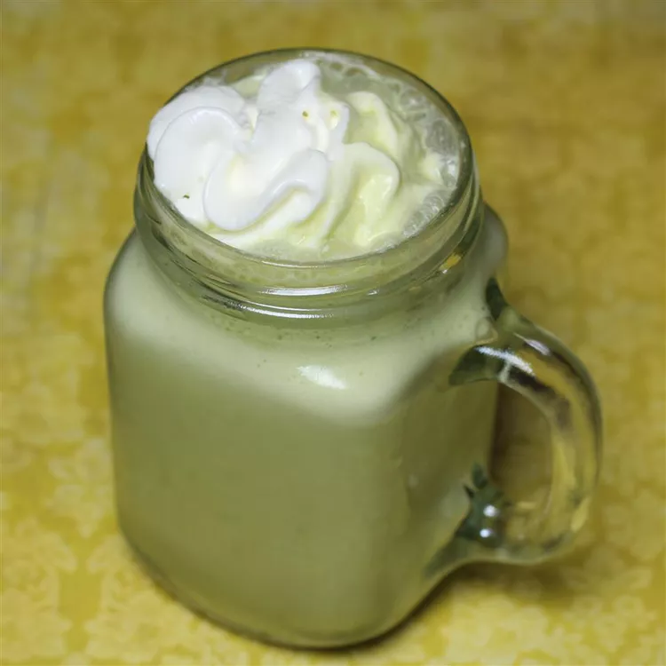

Matcha

Description
Try this matcha frappé for a creamy, delicious drink that rivals the ones you'd get at that well-known coffee chain. I use DōMatcha green tea powder as it's the best quality around. It is expensive, but a little goes a long way.
Ingredients
- 1 cup milk
- 5 ice cubes, or as needed
- 1 tablespoon vanilla-flavored syrup (such as Torani®)
- 1 teaspoon matcha green tea powder, or more to taste
- 1 tablespoon whipped cream, or to taste
Steps
- Blend milk, ice, vanilla syrup, and green tea powder in a blender to desired consistency. Serve with whipped cream on top.
- By increasing or decreasing the amount of ice, you can adjust the thickness of the frappé. You can also adjust the amount of matcha and vanilla syrup to your preference.
You can substitute almond milk, rice milk, or soy milk for the milk. Don't use the contents of green tea bags as a substitution for the matcha powder, though. It's not the same thing and has a whole different taste.